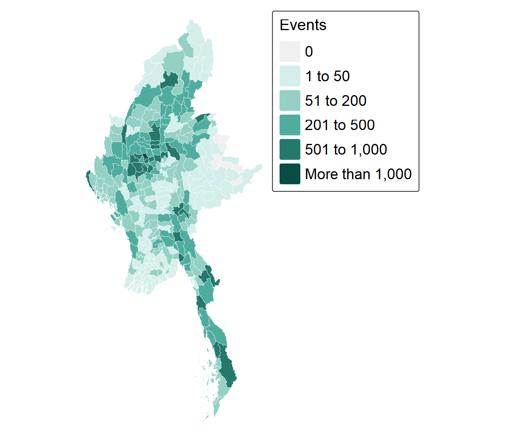
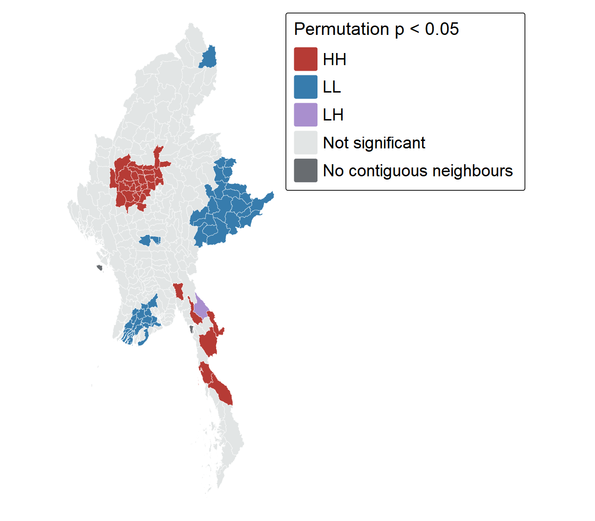
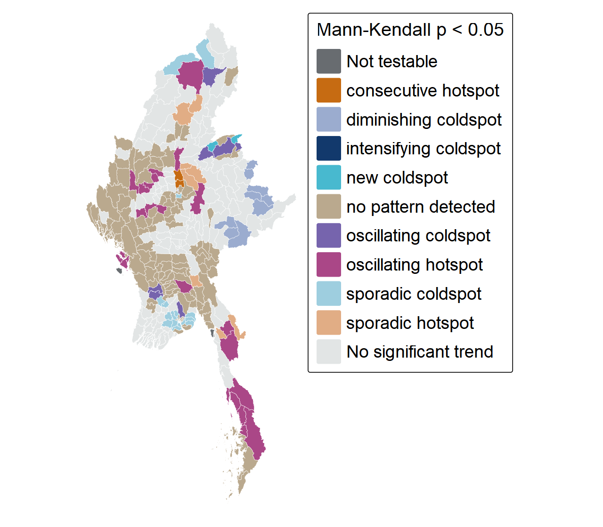
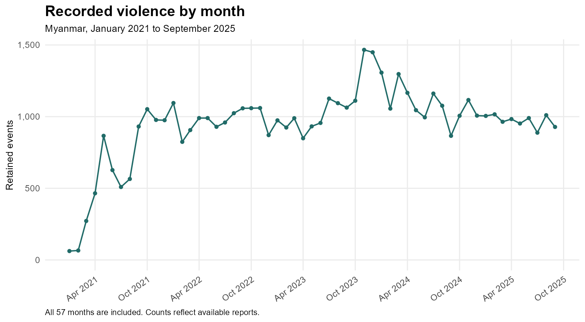

Geospatial Analytics for Peace · January 2021–September 2025
330 townships · 57 months
Battles, explosions and remote violence, and violence against civilians.
The outcome is a count of recorded events. It is not population-adjusted risk.
Sources: supplied ACLED snapshot; official Myanmar Township Boundaries MIMU v9.4.
| Preparation step | Events |
|---|---|
| Original CSV | 87,109 |
| Myanmar, three event types | 54,000 |
| Geographic precision 1 or 2 | 53,907 |
| Unique township assignment | 53,899 |
93 broad-location records and eight unmatched points are excluded.

Monywa: 1,039 events
Kawkareik: 946; Myaing: 934.
The ten highest-count townships contain 15.9% of all retained events.
Explosions and remote violence form the largest event category: 42.5%.
High counts alone do not establish a significant hotspot.

Moran: 35 HH, 49 LL, one LH
Sagaing has 17 HH townships; Mandalay seven and Magway five.
Hlaingbwe is the LH outlier: 61 events, p = 0.004.
Gi*: 35 hot, 50 cold spots
After BH adjustment, 15 Moran HH and 17 Gi* hotspots remain.
Queen/W weights; 999 permutations; two-sided p < 0.05. Three isolated townships are not classified. HH = high-high; LL = low-low; LH = low-high.
Note
Monthly hotspot significance and a significant trend are different results. A persistent hotspot can have no significant upward or downward trend.
999 permutations; seed 6262027. Classroom sfdep uses undoubled smaller-tail bin p ≤ 0.05; the primary map uses MK p < 0.05. January 2021 has no prior bin. Tested local rules correct category handling without changing Gi* values.

209 townships have MK p < 0.05.
106 have increasing Gi* and 103 have decreasing Gi*.
86 have a named hot/cold history; 123 have no named pattern (tan).
Nine diminishing coldspots are in Shan. Lanmadaw in Yangon is the only intensifying coldspot.
Fourteen persistent coldspots have no significant MK trend and are neutral here.

Peak: November 2023
1,466 recorded events.
January–September totals fall from 9,969 in 2024 to 8,736 in 2025 (−12.4%).
Monywa: a full-period HH cluster, but no significant Gi* trend (p = 0.066).
Madaya: an HH cluster with increasing Gi* (tau = 0.604, p < 0.001).
A national decline does not establish that every township improves, or that reporting stayed constant.
What the evidence supports
What remains uncertain
A coldspot is not a declaration of safety.
Technical report and references · Exercise overview. ACLED; MIMU v9.4; spdep; sfdep; Esri EHSA category definitions.
ISSS626 · Take-home Exercise 2